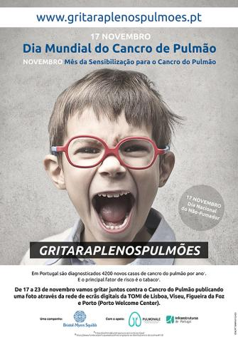

Quem somos
Indicadores
Recursos
Mais apoio
Quem somos
Indicadores
Recursos
Mais apoio
Ações de sensibilização
13 de setembro | 10h às 13h |
O USF Porto Centro associa-se às comemorações dos 40 anos do Serviço Nacional de Saúde através de um conjunto de iniciativas realizadas em parceria com a Câmara Municipal do Porto. Com o objetivo de incentivar a população bracarense a adotar hábitos de vida saudáveis foram programadas as seguintes ações, abertas ao público:
10h00 às 13h00 | Ações de deteção precoce da responsabilidade de diversas especialidades clínicas (Cardiologia, Endocrinologia, Nutrição, Pneumologia)
10h00 às 10h30 | Ação de sensibilização sobre prevenção de quedas da responsabilidade do Serviço de Medicina Física e Reabilitação
10h30 às 11h00 | Aula de ginástica com os técnicos e utentes da USF Porto Centro
Campanhas de vacinação
Prevenção de cancro
A investigação constante, numa área de intervenção tão importante como o cancro é, inquestionavelmente, necessária. Cada vez se sabe mais sobre as suas causas, sobre a forma como se desenvolve e cresce, ou seja, como progride. Estão, também, a ser estudadas novas formas de o prevenir, detectar e tratar, tendo sempre em atenção a melhoria da qualidade de vida das pessoas com cancro, durante e após o tratamento.
